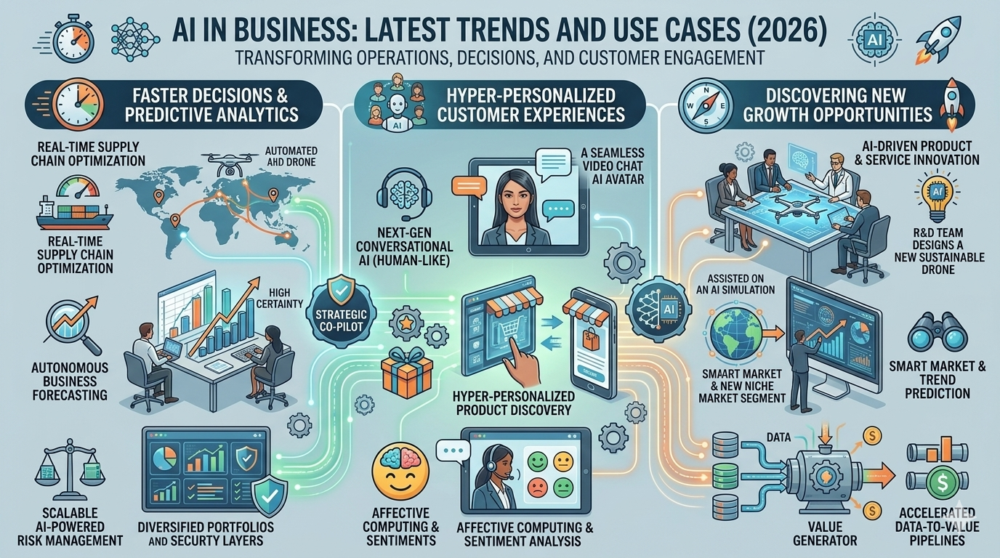

Blog Post
Published - Apr 29, 2026
AI in Business: Latest Trends and Use Cases (2026)
Artificial Intelligence is helping businesses make faster decisions, improve customer experiences, and discover new growth opportunities.

Artificial Intelligence is moving from experiment to everyday business infrastructure. In 2026, companies are using AI to automate routine work, improve customer support, forecast demand, and make faster decisions with fewer manual steps. The biggest shift is not just that more businesses use AI, but that they now expect measurable results from it. Teams want tools that save time, reduce errors, and create better customer experiences without adding unnecessary complexity.
That broader shift connects directly to how organizations think about hiring, security, and content operations. A company adopting AI for customer service may also use it to streamline recruitment, monitor fraud, or launch useful digital products. Readers who want the people side of that change can explore how AI is changing jobs in 2026, while teams building practical utilities can learn from create free tools with AI.
Top AI Trends in Business
The strongest business trend is automation with context. Instead of replacing every task, companies are using AI to assist support teams, summarize meetings, sort leads, draft marketing copy, and speed up analytics. This works best when AI is connected to real workflows rather than being treated like a novelty. Businesses that do this well usually start with one clear use case, track performance, and expand only after they see reliable results.
Another major trend is predictive decision-making. Retailers use AI to estimate inventory needs, software companies use it to identify churn risk, and finance teams use it to flag unusual activity earlier. This is where AI overlaps with operational resilience as well. If a business depends on online systems, it also needs strong defenses, which is why many teams pair growth tools with guidance from articles like the role of AI in cybersecurity today.
Where Businesses Are Using AI Right Now
- Customer support teams use AI to draft replies, route tickets, and identify urgent cases faster.
- Marketing teams use it for research, content ideation, keyword clustering, and performance reporting.
- Operations teams use AI to forecast demand, optimize scheduling, and reduce repetitive admin work.
- HR teams use it to organize applications, improve matching, and surface better candidate insights.
These use cases matter because they are practical, not theoretical. Businesses adopt AI fastest when it solves a familiar problem such as delayed responses, inconsistent reporting, or low conversion from existing traffic. Even small teams can benefit if they choose narrow, high-impact tasks and review outputs carefully.
Risks, Limits, and Smart Adoption
Business leaders also need to stay realistic. AI can save time, but it can also introduce inaccurate answers, weak brand messaging, or privacy issues if it is deployed carelessly. Teams should verify outputs, define approval rules, and avoid feeding sensitive data into tools without clear controls. For a more direct look at those concerns, see challenges and limitations of AI.
The businesses seeing the best results are the ones that treat AI like a support layer, not a shortcut around strategy. They combine experimentation with governance, connect tools to real user needs, and invest in training so teams know when to trust AI and when to pause and review.